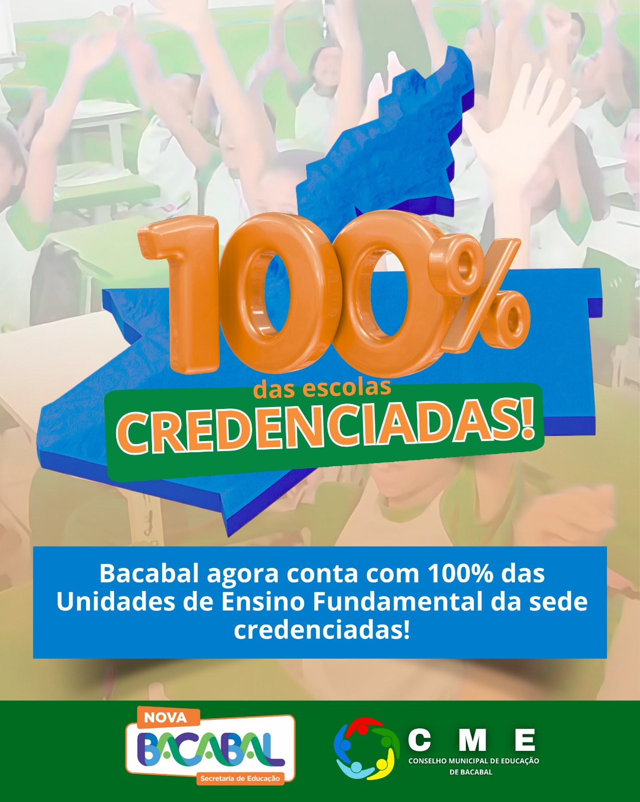

Data: 24 de agosto de 2025
Horário: 13:00
Descrição
O município de Bacabal alcançou um marco histórico na educação: 100% das Unidades de Ensino Fundamental da sede estão oficialmente credenciadas pelo Conselho Municipal de Educação (CME). O credenciamento garante que todas as escolas atendem às exigências legais e pedagógicas, assegurando qualidade, regularidade e transparência no processo de ensino. A conquista reafirma o compromisso da gestão municipal em valorizar a educação pública e oferecer melhores condições de aprendizagem para os estudantes bacabalenses.
A conquista reafirma o compromisso da gestão municipal em valorizar a educação pública e oferecer melhores condições de aprendizagem para os estudantes bacabalenses.